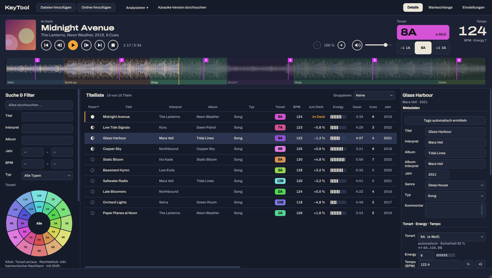
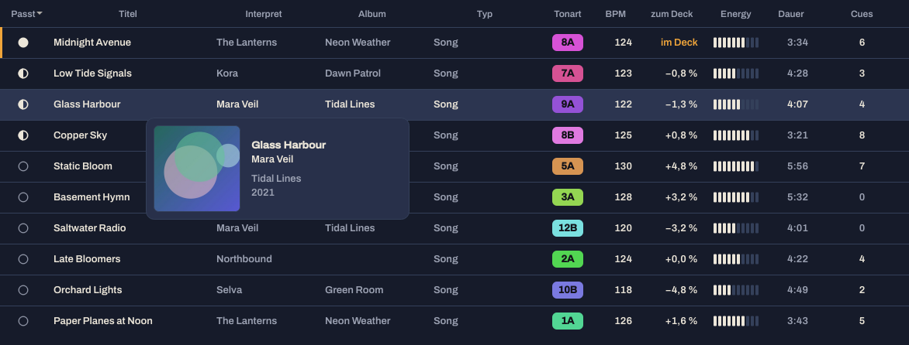
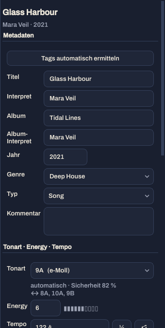
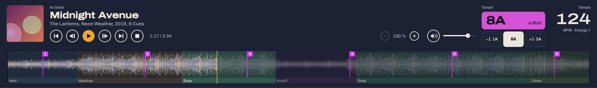
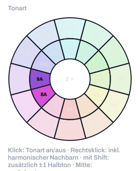
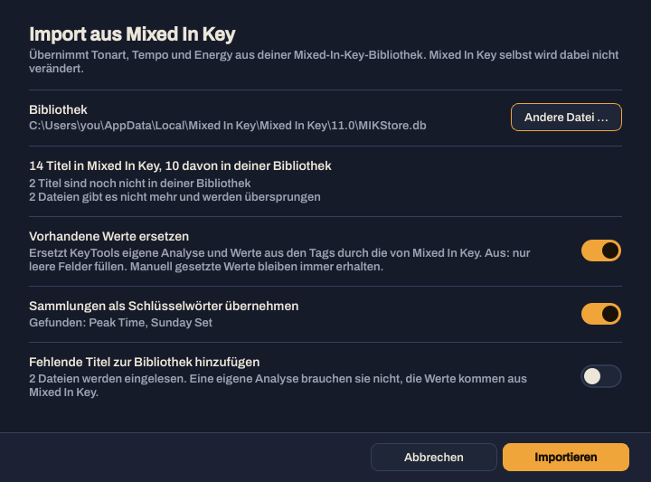

Jeder Track,jede Tonart.
KeyTool ermittelt Tempo und Tonart jedes Songs in deiner Bibliothek, schreibt sie in die Dateien und zeigt dir, welche Tracks zusammenpassen.
Kostenlos. Windows, 64 Bit. Ohne FFmpeg- oder Python-Installation.

- 5 Formate
- MP3, WAV, FLAC, OGG und M4A, einzelne Dateien oder ganze Ordnerbäume.
- 24 Tonarten
- Als Camelot, mit Kreuzen, Bs oder Open Key, mit Sicherheit für jedes Ergebnis.
- 20× schneller
- Hat eine Datei schon ihre Tonart im Tag, wird nur das Tempo analysiert.
- 5 Sprachen
- Deutsch, Englisch, Spanisch, Französisch und Italienisch. Hell oder dunkel.
Analyse, die du nachprüfen kannst
Zieh einen Ordner hinein, und KeyTool arbeitet ihn im Hintergrund ab. Jedes Ergebnis hat eine Sicherheit, und was du von Hand korrigierst, bleibt korrigiert.
- Tempo per Beat-Tracking mit Oktavkorrektur: Aus geschätzten 64 BPM werden 128.
- Tonart mit vorher herausgefiltertem Schlagzeug, dann stimmen drei Tonartprofile gemeinsam ab.
- Tags automatisch: BPM und Tonart landen in der Datei, lesbar für rekordbox, Serato und Traktor. Lässt sich abschalten.
- Nur was fehlt: Vorhandene Tags bleiben, der Rest wird analysiert.


Ein Deck, das den Song kennt
Doppelklick lädt einen Track. Das Deck zeigt die Teile des Songs, deine Serato-Cue-Punkte und wie er einen Halbton höher oder tiefer klingt.
- Serato-Cues aus der Datei gelesen, per Ziehen verschoben und zurückgeschrieben, damit Serato DJ sie sieht.
- Songteile automatisch erkannt: Intro, Strophe, Refrain, Build-up, Drop, Outro. Umbenennen oder verschieben direkt in der Wellenform.
- Transponieren um ±1 Halbton bei Originaltempo, die neue Tonart steht auf dem Knopf.
- Zoom vom ganzen Track bis auf wenige Sekunden, per Mausrad.

Sieh, was passt, bevor du es spielst
Lade einen Track, und jeder andere zeigt dir, ob er dazu passt: gleiche Tonart, harmonischer Nachbar oder Konflikt, dazu die Tempoabweichung in Prozent.
- Camelot-Rad als Filter: Klick wählt eine Tonart, Rechtsklick nimmt die Nachbarn dazu, Shift ±1 Halbton.
- Suche in allem: Titel, Interpret, Album, Jahr, BPM-Bereich, Tonarten und eigene Stichwörter.
- Harmonische Treffer findet Tracks mit ±6 % Tempo, die zu deiner Auswahl passen.

- Gleiche Tonart wie im Deck, oder nach dem Transponieren.
- Harmonischer Nachbar: ein Schritt auf dem Rad, oder die parallele Dur- bzw. Molltonart.
- Passt nicht. Probier, das Deck um einen Halbton zu transponieren.
- ±%
- Tempoabweichung zum Deck, ab 6 % abgeblendet.
Bring deine Bibliothek mit
Du kommst von Mixed In Key? Importier die Datenbank mit Tonarten, Energy und Sammlungen. Du brauchst deine Crate als Tabelle? Exportier sie.
- Mixed In Key 10 und 11 importieren, mit Vorschau, bevor sich etwas ändert.
- CSV-Export mit 28 Spalten zur Auswahl in beliebiger Reihenfolge. Excel-taugliche Trennzeichen werden automatisch gewählt.
- Drag & Drop aus dem Explorer in die Liste und aus der Liste in deine DJ-Software.

Frag Claude nach deiner Crate
KeyTool bringt einen MCP-Server mit. Verbinde ihn mit Claude Desktop oder einer anderen App, die MCP spricht, und arbeite in normaler Sprache mit deiner Bibliothek: suchen, neue Ordner analysieren, Tonarten setzen, Stichwörter vergeben, Tags schreiben oder eine Setlist exportieren.
search_trackscompatible_tracksanalyze_pathsadd_keywordsset_keywrite_tagsexport_csvimport_mixed_in_key
Welche Tracks zwischen 122 und 126 BPM passen zu Midnight Avenue? Gib ihnen das Stichwort Warm-up.
Midnight Avenue ist 8A mit 124 BPM. Drei Tracks passen:
- 7ALow Tide Signals, Kora123
- 9AGlass Harbour, Mara Veil122
- 8BCopper Sky, Northbound125
Alle drei haben jetzt das Stichwort Warm-up.
Beispiel mit der Demo-Bibliothek aus den Screenshots.
Trag das in die Konfiguration von Claude Desktop ein. Unter Einstellungen → MCP-Server zeigt KeyTool den genauen Eintrag für deine Installation.
{
"mcpServers": {
"keytool": {
"command": "C:\\Program Files\\KeyTool\\KeyTool-MCP.exe"
}
}
}In einer Minute startklar
-
Herunterladen
Hol dir die Zip-Datei für Windows aus dem neuesten Release.
-
Entpacken und starten
Leg den Ordner irgendwohin und öffne
KeyTool.exe. Sonst ist nichts zu installieren. -
Ordner hinzufügen
Wähle deinen Musikordner. Die Analyse startet sofort, und die Tags werden geschrieben, sobald ein Track fertig ist.
Lieber aus dem Quellcode? Installiere Python 3.10–3.13 und doppelklicke start.bat. Beim ersten Start wird alles eingerichtet, nach Updates kommen neue Pakete automatisch dazu. build_exe.bat baut dir eigene Programmdateien.
Fragen
Was ändert KeyTool an meinen Dateien?
Nur Tags: BPM, Tonart und Audiotyp nach der Analyse, die Metadaten, die du bearbeitest, und die Cue-Punkte, die du verschiebst. Der Ton selbst wird nie angefasst. Das Schreiben von Tags lässt sich in den Einstellungen abschalten.
Lesen rekordbox, Serato und Traktor die Tonarten?
Ja. Der Tonart-Tag nutzt standardmäßig Kreuze (zum Beispiel F#m), die alle drei verstehen. Stattdessen kannst du Camelot, Bs oder Open Key wählen.
Gibt es eine Mac-Version?
Noch nicht. KeyTool läuft vorerst unter Windows; auf anderen Systemen kannst du es mit Python aus dem Quellcode starten.
Brauche ich Claude dafür?
Nein. KeyTool ist eine vollständige Desktop-App. Der MCP-Server ist ein Extra für alle, die ihre Bibliothek über einen KI-Assistenten bedienen möchten.
Wo wird meine Bibliothek gespeichert?
In einer einzigen Datenbankdatei unter %APPDATA%\KeyTool, die App und MCP-Server gemeinsam nutzen. Nichts wird irgendwohin hochgeladen.